UPB
CURRENTLY STUDYING
Universitas Pelita Bangsa
Program Studi Teknik Informatika
Semester 3Still learning, still exploring.
PERSONAL PORTFOLIO · 2026
Mahasiswa Teknik Informatika yang sedang mengenal lebih dekat dunia UI/UX Design.
Aku tertarik pada dunia teknologi dan desain digital. Aku senang mengeksplorasi ide, belajar membuat tampilan yang menarik, dan memahami bagaimana sebuah desain bisa terasa sederhana serta nyaman digunakan.
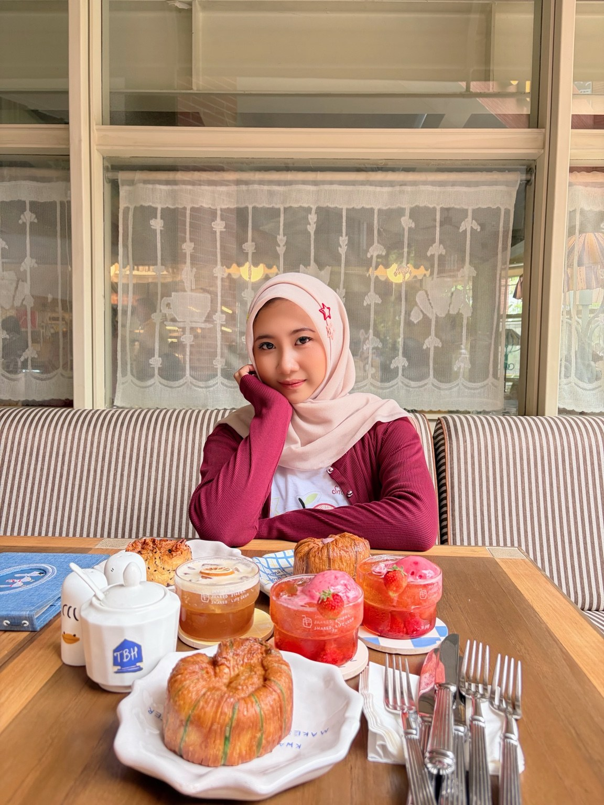
A LITTLE INTRODUCTION
“Aku percaya setiap proses kecil adalah bagian dari perjalanan untuk menjadi lebih baik.”
01 / ABOUT ME
Hai! Aku Amelia Puspitasari, mahasiswa semester 3 Program Studi Teknik Informatika di Universitas Pelita Bangsa. Saat ini aku menjalani perkuliahan sambil bekerja sebagai Operator Produksi. Dua kegiatan ini menjadi bagian penting dalam keseharianku dan memberiku banyak kesempatan untuk belajar, mengenal diri sendiri, serta mengembangkan kemampuan.
Aku memiliki ketertarikan pada dunia teknologi, terutama coding dan proses di balik pembuatan sebuah website atau aplikasi. Aku masih dalam tahap mengenal berbagai bidang di dunia teknologi dan terkadang masih mencari tahu bagian mana yang paling sesuai dengan minat serta kemampuanku. Justru dari rasa penasaran itu, aku mulai mencoba hal-hal baru dan menikmati proses belajar dari dasar.
Belakangan ini, aku semakin tertarik pada UI/UX Design. Menurutku, bidang ini menarik karena menggabungkan kreativitas, pemikiran yang terstruktur, dan pemahaman terhadap kebutuhan pengguna. Aku senang menyusun layout, memilih warna, mengatur elemen visual, serta membayangkan bagaimana seseorang menggunakan sebuah aplikasi. Karena itu, saat ini aku ingin lebih fokus mempelajari UI/UX Design sambil perlahan memperdalam pengetahuan tentang coding.
Di luar kuliah dan pekerjaan, aku senang mengikuti kegiatan yang memberikan pengalaman baru. Aku suka mengikuti event lari, menghadiri kajian bersama teman-teman, terlibat dalam kegiatan volunteer, dan mengikuti kegiatan Sekolah Pasar Modal. Kegiatan tersebut membuatku bisa bertemu orang baru, memperluas wawasan, membangun relasi, dan belajar dari lingkungan yang berbeda.
Aku bukan seseorang yang merasa sudah menguasai semuanya. Aku masih belajar, masih mencoba, dan masih mencari banyak pengalaman. Namun, aku percaya setiap proses kecil tetap berarti dan bisa menjadi bekal untuk berkembang menjadi pribadi yang lebih baik.
Senang belajar hal baru dan mencoba ide.
Menikmati proses membuat dan merapikan desain.
Terus belajar dari kuliah, pekerjaan, dan pengalaman.
02 / EDUCATION
| No. | Jenjang | Nama Institusi | Tahun | Keterangan |
|---|---|---|---|---|
| 01 | SD | SDN Wanajaya 02 | 2013–2019 | Lulus |
| 02 | SMP / MTs | MTs Hasanah Fathimiyah | 2019–2022 | Lulus |
| 03 | SMA | SMAN 2 Cikarang Barat | 2022–2025 | Lulus |
| 04 | Perguruan Tinggi | Universitas Pelita Bangsa | 2025–sekarang | Teknik Informatika · Semester 3 |
CURRENTLY STUDYING
Program Studi Teknik Informatika
Menjadi bagian dari Universitas Pelita Bangsa memberikan banyak pengalaman baru untukku. Selama menjalani perkuliahan, aku belajar mengenal lingkungan akademik, bertemu teman-teman dengan berbagai karakter, bertukar pikiran, dan menyelesaikan berbagai kegiatan bersama. Setiap pertemuan dan pengalaman memberikan cerita tersendiri yang membuat perjalanan kuliah terasa lebih berwarna.
Bagiku, masa kuliah bukan hanya tentang memahami materi di kelas atau menyelesaikan tugas. Aku juga belajar bekerja sama, membangun komunikasi, menghargai perbedaan pendapat, dan mengatur waktu. Pengalaman bersama teman-teman menjadi bagian yang menyenangkan karena dari hal sederhana seperti berdiskusi, mengerjakan tugas, atau menghabiskan waktu bersama, aku bisa belajar banyak hal.
Sebagai mahasiswa Teknik Informatika, aku ingin memanfaatkan masa kuliah untuk mengenal teknologi lebih dalam, mencoba berbagai bidang, dan menemukan kemampuan yang ingin aku kembangkan. Aku berharap pengalaman selama kuliah dapat menjadi bekal untuk melangkah ke dunia profesional nantinya.
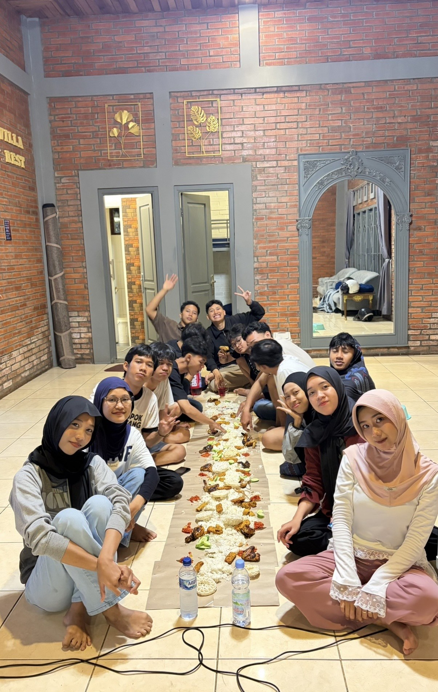
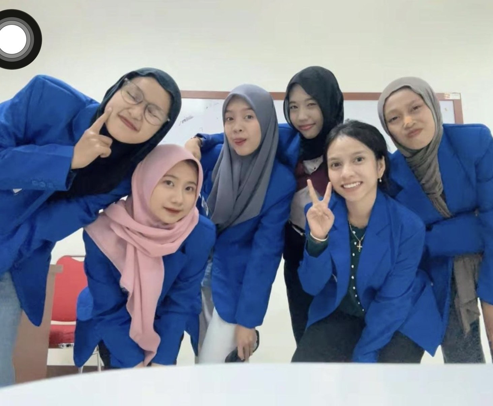
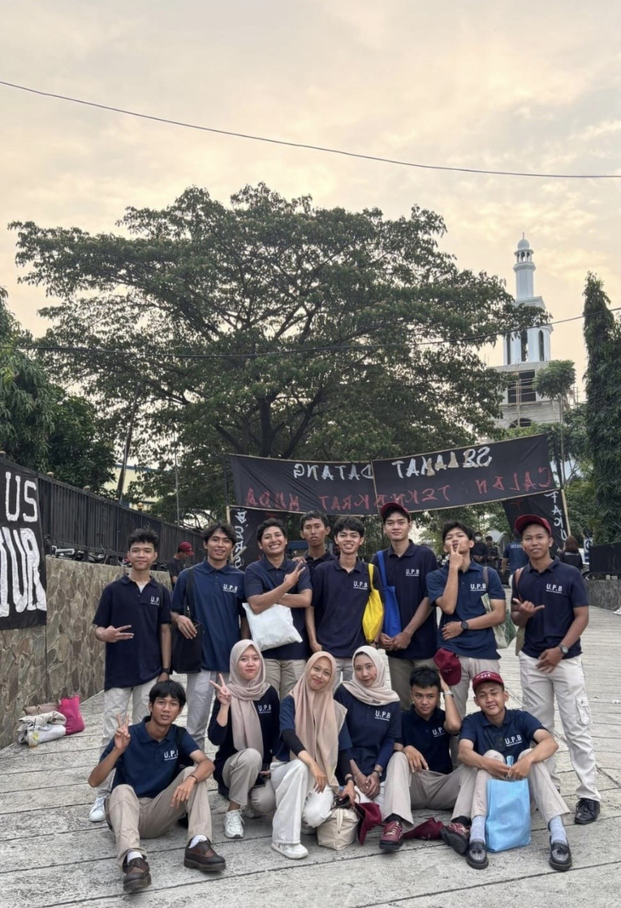
03 / SKILLS & INTERESTS
Kemampuan yang sedang aku kembangkan, satu proses dalam satu waktu.
Aku sedang mempelajari dasar Figma untuk membuat rancangan antarmuka aplikasi. Mulai dari menyusun frame, mengatur layout, memilih warna dan tipografi, hingga menempatkan elemen visual agar tampilan lebih teratur dan mudah dipahami.
Beginner · PemulaAku mencoba menghubungkan halaman-halaman desain menggunakan fitur Prototype. Dari proses ini, aku belajar membuat alur perpindahan halaman dan memahami bagaimana pengguna berinteraksi dengan rancangan aplikasi.
Basic · DasarAku senang menggunakan Canva untuk mengedit foto dan membuat komposisi visual yang lebih personal. Aku bereksperimen dengan perpaduan warna, stiker, doodle, ilustrasi, serta elemen dekoratif agar hasil edit terlihat menarik dan tetap selaras.
Creative practicePengalaman kuliah dan bekerja membantuku belajar berkomunikasi, bekerja sama dalam tim, mengikuti tanggung jawab, memperhatikan detail, serta menjaga kualitas hasil pekerjaan.
Work experienceCoding · UI/UX Design · Digital Product · Visual Design
04 / SELECTED PROJECTS
Beberapa karya yang menjadi bagian dari proses belajarku.
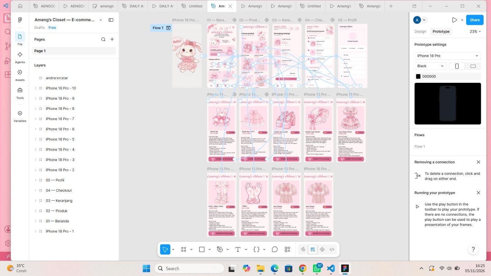
FIGMA · UI/UX PROJECT01 / APP DESIGN & PROTOTYPE
Ameng's Ribbon merupakan proyek latihan perancangan aplikasi e-commerce fashion yang aku buat menggunakan Figma. Aku mengembangkan konsep visual yang feminin dengan nuansa warna dan elemen yang sesuai dengan karakter proyek. Melalui proyek ini, aku mencoba menuangkan ide menjadi rancangan aplikasi yang memiliki tampilan dan alur penggunaan yang saling terhubung.
Rancangan ini terdiri dari beberapa halaman utama, yaitu Welcome Page sebagai halaman pembuka, Home Page untuk menampilkan beranda dan pilihan produk, Product Page untuk melihat detail produk, Shopping Cart untuk meninjau barang yang dipilih, Checkout Page untuk memeriksa pesanan, serta Profile Page untuk menampilkan informasi akun pengguna.
Setelah menyusun tampilan setiap halaman, aku mencoba menggunakan fitur Prototype untuk menghubungkan halaman-halaman tersebut. Aku belajar mengatur navigasi dari beranda menuju produk, memasukkan produk ke keranjang, dan melanjutkan alur hingga checkout. Proyek ini menjadi pengalaman awal yang membantuku memahami bahwa desain aplikasi bukan hanya soal tampilan yang menarik, tetapi juga tentang alur yang jelas dan nyaman digunakan.
Dari Ameng's Ribbon, aku belajar menyusun layout, menjaga konsistensi elemen visual, memilih warna, mengatur komposisi, dan mencoba membuat simulasi interaksi sederhana. Aku masih terus mengembangkan kemampuan ini agar bisa menghasilkan rancangan yang lebih baik.
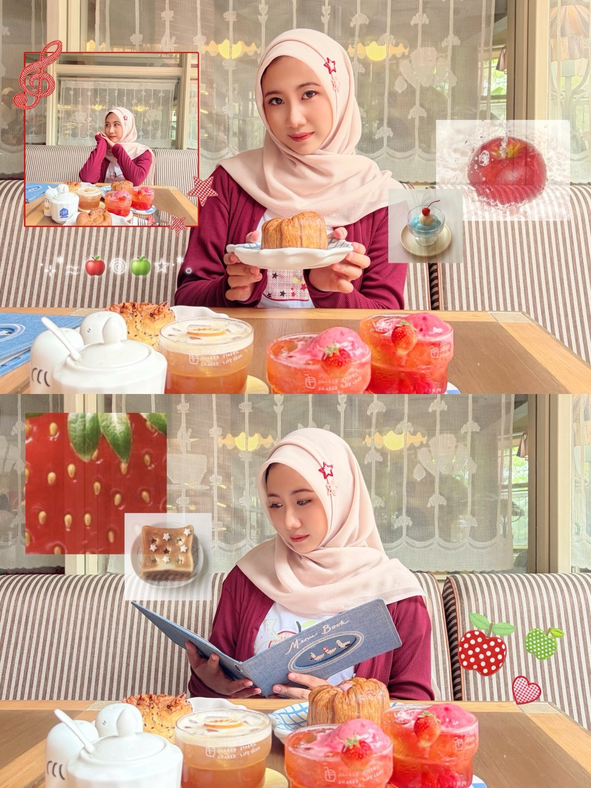
CANVA · PHOTO EDITING02 / VISUAL EDITING
Karya ini merupakan bagian dari eksplorasi kreativitas visual yang aku lakukan menggunakan Canva. Aku mencoba mengembangkan tampilan foto dengan menambahkan elemen dekoratif seperti stiker, ilustrasi, doodle, dan ornamen yang disesuaikan dengan konsep gambar. Aku menikmati proses memilih elemen, mengatur posisi objek, serta memadukan warna agar hasilnya terasa lebih menarik dan personal.
Melalui proses editing ini, aku belajar memperhatikan komposisi, keseimbangan visual, dan detail kecil yang dapat membuat sebuah foto memiliki suasana berbeda. Aku juga belajar bahwa desain yang menarik tidak selalu harus dipenuhi banyak elemen, tetapi perlu memiliki susunan yang nyaman dilihat.
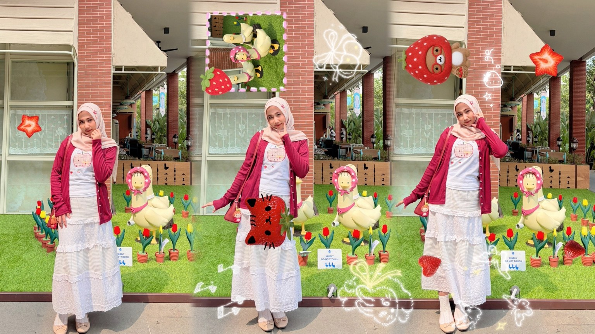
CANVA · CREATIVE EDIT03 / CREATIVE PLAYGROUND
Dalam karya ini, aku mencoba menggabungkan beberapa foto dengan dekorasi dan detail visual untuk menciptakan komposisi yang lebih hidup. Aku bereksperimen dengan penempatan gambar, ukuran elemen, warna, dan ornamen agar semuanya terlihat menyatu.
Proses ini menjadi ruang untuk mencoba berbagai ide tanpa takut bereksperimen. Dari sini aku semakin menikmati kegiatan mengedit foto dan ingin terus mengembangkan kepekaan terhadap warna serta komposisi visual.
05 / WORK EXPERIENCE
| No. | Posisi | Perusahaan / Instansi | Periode | Uraian |
|---|---|---|---|---|
| 01 | Operator Produksi | PT SKYWORTH INDUSTRY INDONESIA | 12 BULAN | Menjalankan tugas produksi sesuai prosedur, memperhatikan ketelitian, menjaga kualitas pekerjaan, dan bekerja sama dengan tim. |
Saat ini aku bekerja sebagai Operator Produksi sambil melanjutkan perkuliahan. Menjalani dua tanggung jawab ini mengajarkanku untuk lebih memperhatikan pengaturan waktu dan berusaha menjalankan setiap kegiatan dengan sebaik mungkin. Dalam pekerjaan, aku belajar mengikuti alur serta prosedur yang berlaku, menjalankan tugas dengan teliti, dan memahami bahwa setiap tahapan proses memiliki peran terhadap hasil akhir.
Salah satu hal penting yang aku pelajari adalah menjaga kualitas pekerjaan. Bekerja di lingkungan produksi membuatku semakin memahami pentingnya ketelitian, kedisiplinan, dan tanggung jawab. Aku berusaha menyelesaikan tugas sesuai arahan, memperhatikan detail, serta menjaga agar pekerjaan dilakukan dengan baik.
Selain hal-hal teknis, aku juga mendapatkan pengalaman berharga dari interaksi dengan rekan kerja. Suasana kerja yang menyenangkan, komunikasi sehari-hari, saling membantu, dan sesekali bercanda bersama teman-teman membuat kegiatan bekerja terasa lebih seru. Dari sini aku belajar bahwa kerja sama dan hubungan yang baik dapat membantu menciptakan lingkungan kerja yang positif.
Pengalaman sebagai Operator Produksi menjadi bekal yang berarti bagiku. Nilai seperti disiplin, ketelitian, kerja sama, komunikasi, dan menjaga kualitas juga ingin aku bawa ketika nantinya mengembangkan karier di bidang teknologi dan UI/UX Design.
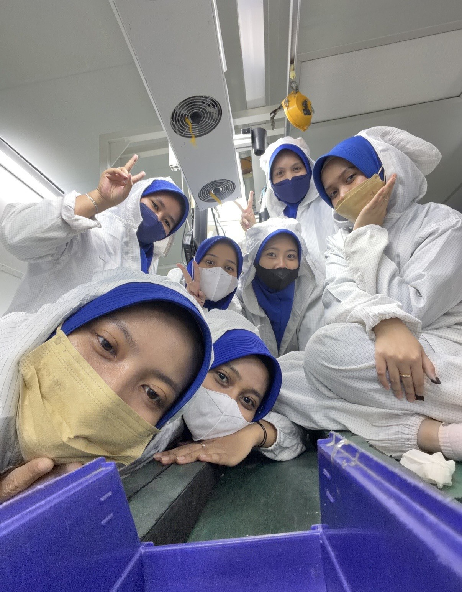
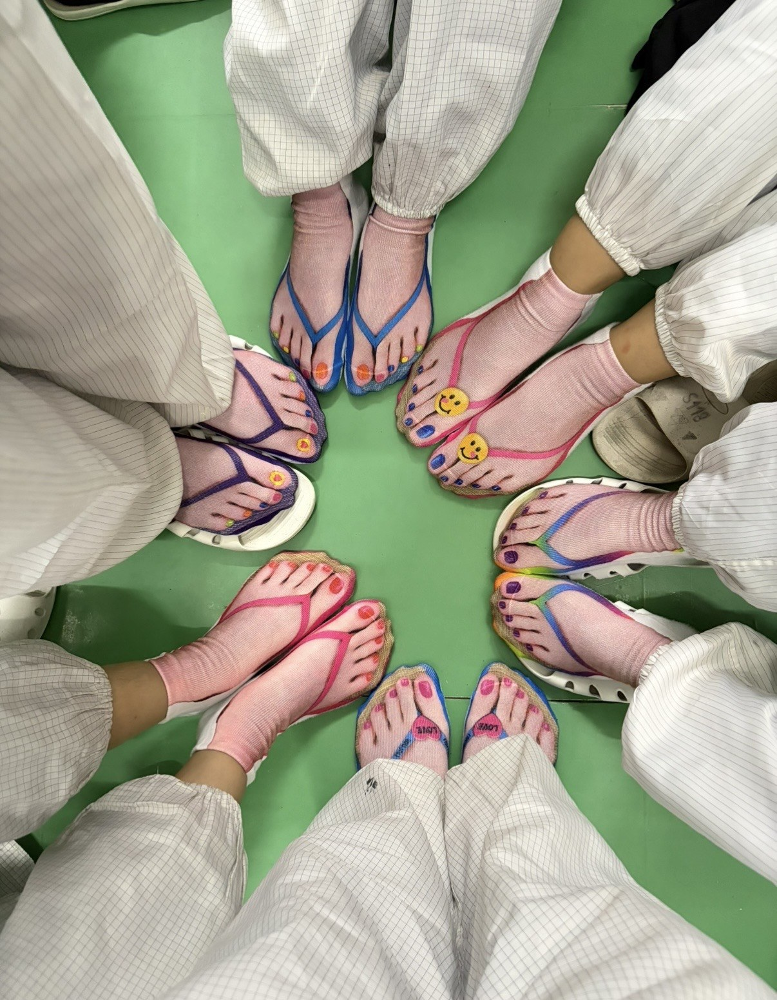
06 / BEYOND THE SCREEN
Aku suka mencoba hal baru, bertemu orang-orang, dan mengisi waktu dengan kegiatan yang memberi pengalaman.
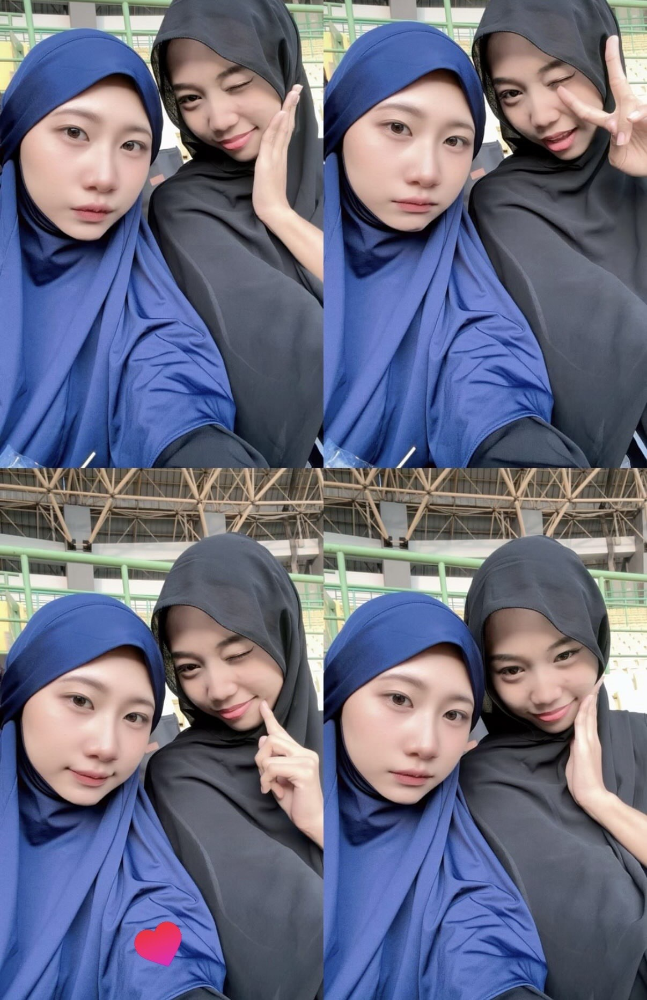
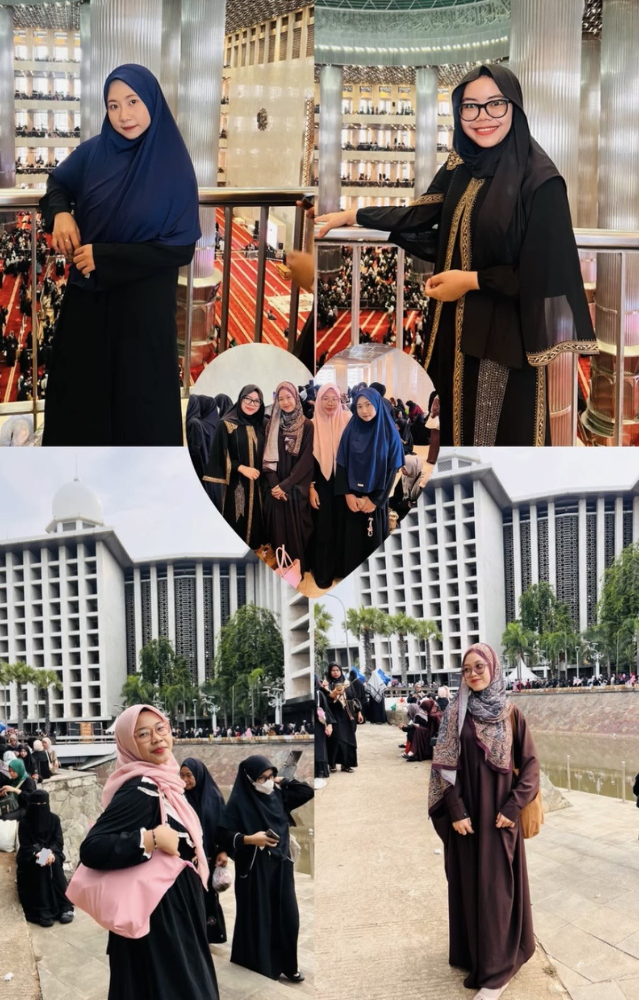
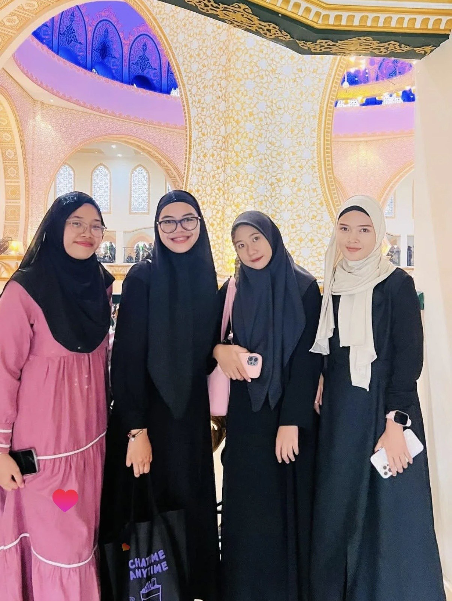
Aku senang mengikuti kegiatan kajian bersama teman-teman. Bagiku, kegiatan ini menjadi kesempatan untuk belajar, menambah wawasan, dan mempererat hubungan pertemanan. Aku bisa menghabiskan waktu bersama orang-orang yang positif sekaligus mendapatkan pengingat dan pelajaran yang bermanfaat.
Selain materi yang didapatkan, momen kebersamaan sebelum maupun sesudah kegiatan juga menjadi bagian yang aku nikmati. Aku percaya bahwa proses belajar terasa lebih menyenangkan ketika bisa dijalani bersama teman-teman dan saling mengingatkan dalam hal baik.
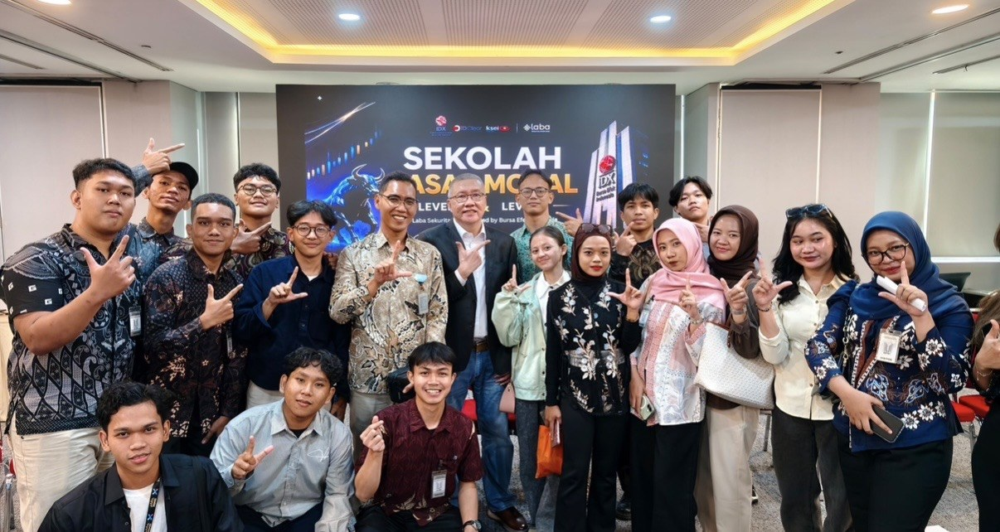
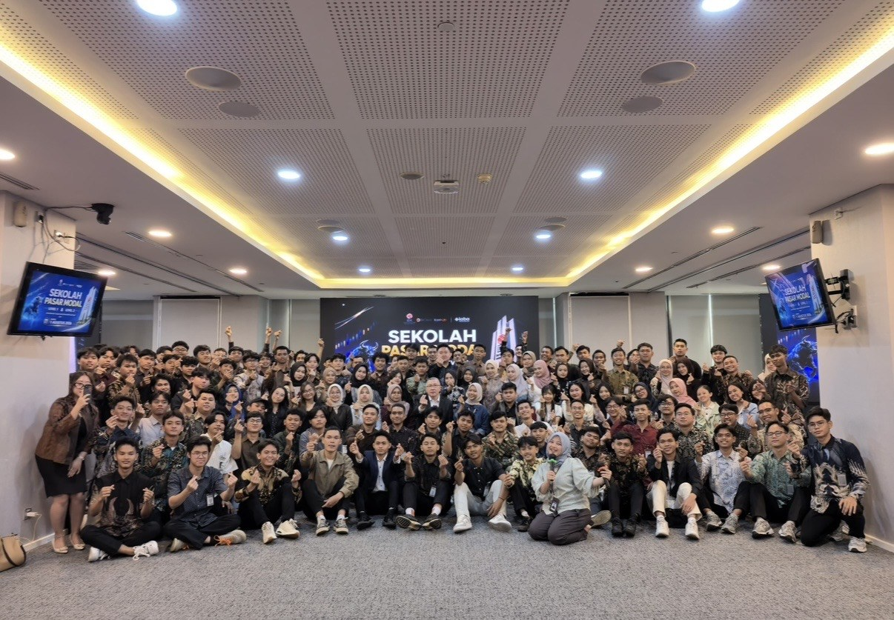
Mengikuti kegiatan Sekolah Pasar Modal menjadi salah satu pengalaman berharga bagiku untuk mengenal dunia investasi dan pasar modal secara lebih dekat. Melalui kegiatan ini, aku mendapat kesempatan untuk menambah wawasan tentang bagaimana pasar modal bekerja, mengenal berbagai instrumen investasi, serta memahami pentingnya pengetahuan sebelum mengambil keputusan keuangan.
Selain mendapatkan ilmu baru, kegiatan ini juga memberiku kesempatan untuk bertemu dan belajar bersama banyak peserta dengan minat yang sama. Pengalaman berada di lingkungan yang membahas investasi membuatku menyadari bahwa pengetahuan keuangan merupakan hal yang penting untuk dipelajari secara bertahap.
Pengalaman ini membuatku semakin tertarik untuk terus belajar tentang literasi keuangan, lebih bijak dalam mengelola uang, dan berani mengeksplorasi hal-hal baru di luar kegiatan kuliah maupun pekerjaan. Aku ingin menjadikan kegiatan seperti ini sebagai salah satu cara untuk memperluas wawasan dan mengenal bidang baru.
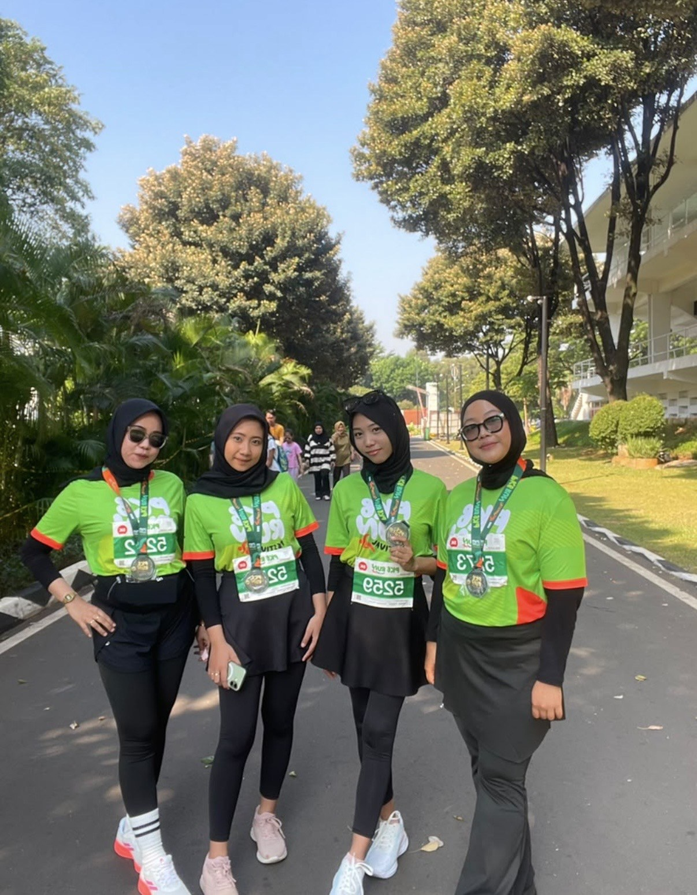
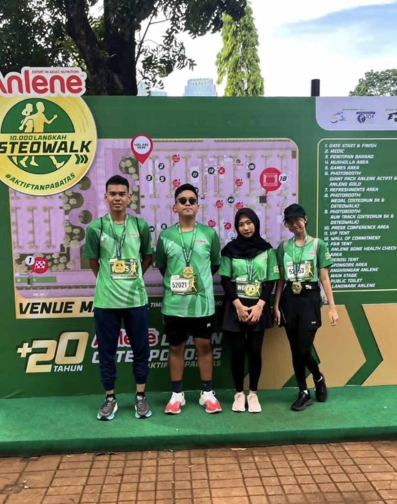
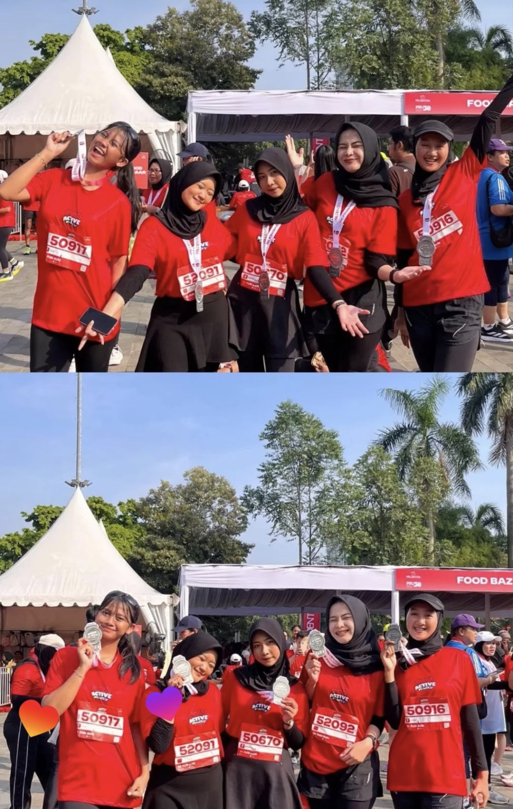
Salah satu kegiatan yang aku sukai adalah mengikuti event lari. Bagiku, mengikuti event bukan hanya tentang mencapai garis akhir atau mendapatkan medali, tetapi juga tentang menikmati proses, menjaga semangat, dan mencoba tantangan baru.
Setiap event memberikan cerita dan pengalaman yang berbeda. Aku suka suasana kebersamaan, energi positif dari para peserta, serta rasa senang setelah berhasil menyelesaikan kegiatan. Melalui kegiatan ini, aku juga belajar tentang konsistensi, semangat, dan pentingnya menjaga kesehatan.
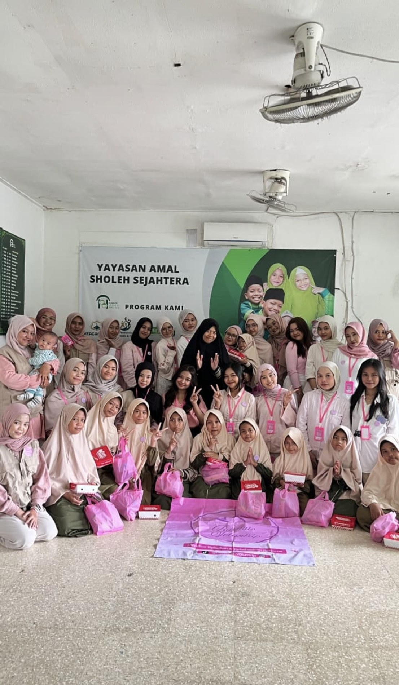
Aku juga senang terlibat dalam kegiatan volunteer. Salah satu pengalaman yang aku dokumentasikan adalah kegiatan bersama Yayasan Amal Sholeh Sejahtera. Kegiatan ini memberiku kesempatan untuk berinteraksi dengan banyak orang, merasakan kebersamaan, dan ikut terlibat dalam aktivitas sosial.
Bagiku, menjadi bagian dari kegiatan volunteer merupakan pengalaman yang berarti. Aku belajar bahwa kontribusi tidak selalu harus dimulai dari hal besar. Kemauan untuk membantu, bekerja sama, dan peduli terhadap lingkungan sekitar juga merupakan hal yang penting.
A NOTE TO MY FUTURE SELF
Aku memiliki impian untuk berkembang menjadi seorang UI/UX Designer yang mampu menciptakan tampilan digital yang menarik, mudah digunakan, dan memberikan pengalaman positif bagi penggunanya. Aku ingin terus memperdalam kemampuan menggunakan Figma, mempelajari proses desain yang lebih baik, memahami kebutuhan pengguna, dan mengembangkan kemampuan dalam membuat prototype.
Selain itu, aku juga ingin terus mengenal dunia coding agar dapat memahami hubungan antara proses desain dan pengembangan sebuah produk digital. Aku menyadari masih banyak hal yang harus dipelajari, sehingga aku ingin memperbanyak latihan, membangun portfolio, dan mencoba berbagai pengalaman baru.
Aku percaya tidak masalah memulai dari dasar selama memiliki kemauan untuk terus berkembang. Aku ingin menikmati setiap proses, belajar dari kesalahan, dan menjadikan setiap proyek sebagai kesempatan untuk menjadi lebih baik.
One step at a time, Amelia. ♡07 / MULTIMEDIA
Bagian ini disiapkan untuk audio dan video perkenalan Amelia.
AUDIO INTRODUCTION
media/WhatsApp Ptt 2026-11-08 at 22.41.55.mp3VIDEO INTRODUCTION
media/WhatsApp Video 2026-11-09 at 14.50.04.mp407 / CONTACT
Terima kasih sudah meluangkan waktu untuk mengenal diriku dan melihat karya-karyaku. Aku selalu terbuka untuk belajar, bertukar ide, mendapatkan pengalaman baru, dan menjalin koneksi dengan orang-orang yang memiliki ketertarikan pada dunia teknologi serta desain digital. Mari terhubung dan berbagi inspirasi!